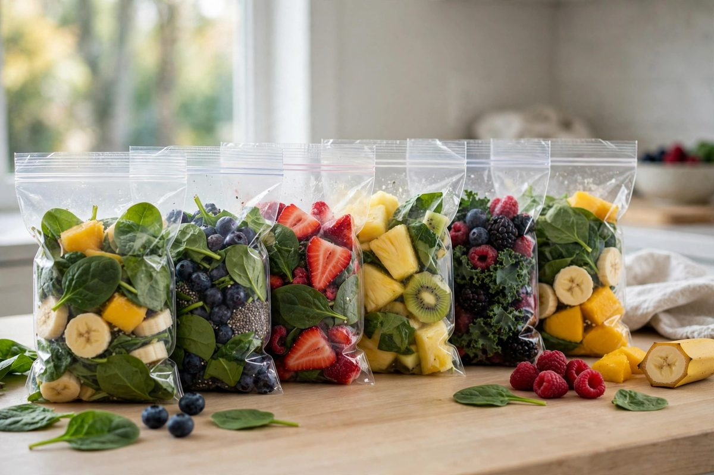

Home » Guides
Smoothie Meal Prep

Smoothie meal prep means preparing bags or jars of ingredients in advance, so a fresh smoothie takes less than a minute to blend on a busy morning. It saves time, reduces waste, and makes it much more likely that you will actually make a smoothie instead of skipping breakfast. This guide covers packing freezer bags, prepping jars, how long prepped smoothies keep, and how to organise a week of smoothies without spending a whole afternoon on it.
Freezer smoothie packs
The simplest method is the freezer pack: portion the solid ingredients for one smoothie into a zip-lock bag or reusable container, label it, and freeze it. A typical pack might contain a banana, a cup of berries, a handful of spinach, and a tablespoon of oats. In the morning, tip the pack into the blender, add milk or water, and blend. Freezer packs keep for up to three months, although they taste best within a month. Make five to seven packs at once, one for each day, and store them flat in the freezer so they stack neatly.
Overnight smoothie jars
Another method is the overnight jar: layer the ingredients in a jar, add the liquid, and leave it in the fridge overnight. In the morning, blend it or shake it and drink it. Overnight jars work best for smoothies with oats or chia seeds, because they soften and thicken overnight. Use a jar within 24 hours, and keep it sealed in the fridge. This method is handy if you do not want to use the blender in the morning, but the smoothie will be less fresh than one blended from a freezer pack.
Planning a week of smoothies
Plan five smoothies for the week, with a mix of flavours so you do not get bored. For example: a berry smoothie on Monday, a green smoothie on Tuesday, a tropical smoothie on Wednesday, a chocolate smoothie on Thursday, and a peanut butter smoothie on Friday. Buy the fruit in one shop, prep all the packs in one twenty-minute session, and store them in the freezer. Keep a list on the fridge of what is in each pack, so you can grab the one you want. Vary the protein and the greens through the week for a better range of nutrients.
Storage and food safety
Frozen smoothie packs are safe for up to three months, but use them within a month for the best flavour. Label every pack with the recipe name and the date. Do not refreeze a pack that has thawed. Blended smoothies keep in the fridge for up to 24 hours in a sealed jar, but they taste best within a few hours, and they will separate, so shake well before drinking. Wash reusable bags and jars in hot soapy water after each use. If a prepped smoothie smells off or looks discoloured, throw it away.
A Sunday prep session
A Sunday prep session is the heart of smoothie meal prep. Set aside twenty minutes, wash and chop the fruit, portion it into bags, and label each one with the recipe and the day. Clean the blender and put it back on the counter, so it is ready in the morning. Check that you have enough milk, yoghurt, and ice, and add anything you need to the shopping list. During the week, the prep pays off every morning, when a fresh smoothie takes less than a minute. A short session on Sunday saves time and stress on five busy mornings.
Frequently Asked Questions
How long do freezer smoothie packs last?
Up to three months in the freezer, but they taste best within a month. Label each pack with the date.
Can I blend a smoothie the night before?
Yes, it keeps for up to 24 hours in a sealed jar in the fridge. Shake well before drinking, as it will separate.
Do I need to add ice if I use a freezer pack?
No. The frozen fruit in the pack makes the smoothie cold and thick, so ice is not needed.